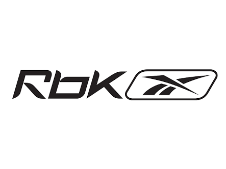
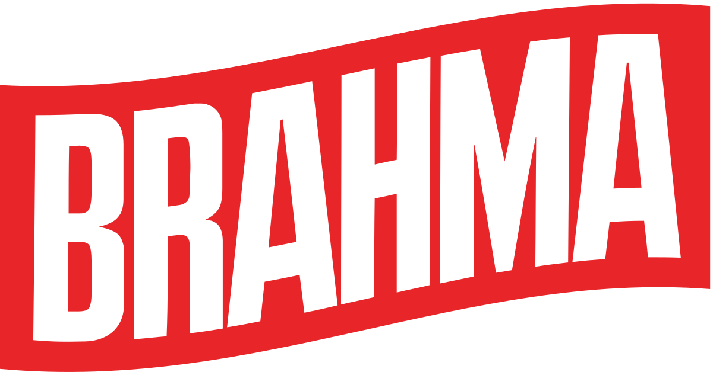
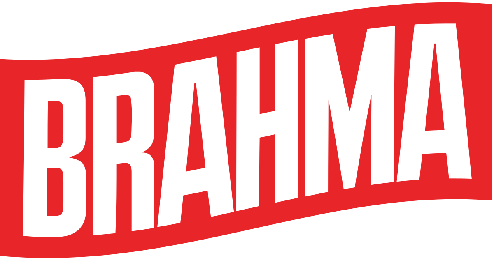
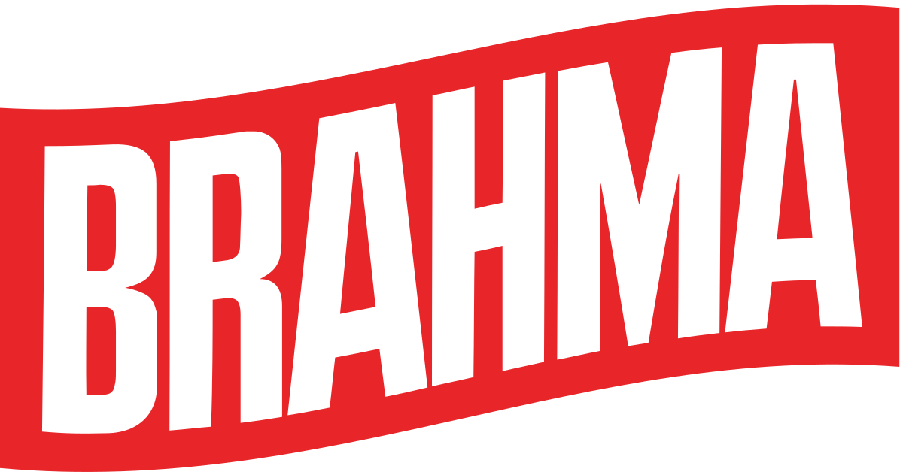
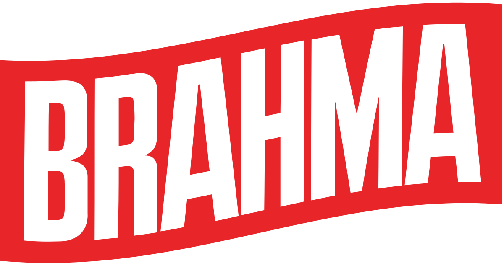

Botafogo de Futebol e Regatas
Patrionador:

 



Construído em 1912 e inaugurado no ano seguinte, o campo de General Severiano teve como sua primeira partida oficial o primeiro jogo do Campeonato Carioca de 1913, na qual o Botafogo venceu o Flamengo por 1 a 0. Anos depois, em 1927, foi lançada a pedra fundamental do Palacete colonial (casarão) que foi inaugurado um ano depois, 1928, com uma semana de festividades. Um grande baile para a alta sociedade carioca, em 15 de dezembro do mesmo ano, encerrou as comemorações da inauguração da magnífica construção que mantêm sua estrutura arquitetônica original até hoje. O estádio em si foi inaugurado em 1938, com uma bela cerimônia, com terra de todos os estados enterradas no solo do gramado. Em 1976, ao vender a sede para a Companhia Vale do Rio Doce, o clube deixou seu palacete rumo, inicialmente, ao Mourisco Pausteur, no qual ficou de 1977 a 1992, ano em que se transferiu para o Mourisco Mar. Apenas em maio de 1994, na gestão do presidente Carlos Augusto Montenegro, o Botafogo voltou ao palacete. À época o estádio já não mais existia.
Construído para os Jogos Pan-Americanos de 2007, o Estádio Nilton Santos foi erguido pela prefeitura no antigo terreno da Rede Ferroviária Federal, na Rua José dos Reis, no bairro do Engenho de Dentro, Zona Norte do Rio de Janeiro. Inaugurado no dia 30 de junho de 2007, com a vitória do Botafogo por 2 a 1 sobre o Fluminense, o estádio é considerado o mais moderno da América Latina e o quinto mais moderno do mundo. O sonho do Botafogo de ter seu próprio estádio virou realidade em agosto de 2007, quando o clube venceu a licitação realizada pela prefeitura. O clube, então, passou a mandar seus jogos no local, além de administrá-lo e explorá-lo comercialmente. Em 2015, a pedido do Botafogo, o nome fantasia foi alterado para Estádio Nilton Santos, em homenagem ao ídolo conhecido como Enciclopédia do Futebol. Em 2017, virou nome oficial. Além do campo de futebol com grama natural, de dimensões de 105 x 68m, o estádio conta com uma pista de atletismo, com nove raias no padrão standard da IAAF, dois setores para salto triplo e em distância, um para salto com vara, outro para salto em altura e uma pista de dardo. Há ainda um campo anexo destinado a treinamentos e uma pista de atletismo interna para aquecimento. O Estádio Nilton Santos atualmente tem capacidade para 46 mil pessoas e foi o principal equipamento dos Jogos Olímpicos de 2016.
Torneio Triangular de Porto Alegre: 1951* Torneio Quadrangular do Rio de Janeiro: 1954* Torneio Quadrangular de Belo Horizonte: 1964* Torneio Quadrangular de Teresina: 1966 Torneio Independência do Brasil (Brasília): 1974* Torneio Ministro Ney Braga (Belém): 1976 Torneio 23º Aniversário de Brasília: 1983* Torneio da Capital e do Interior/RJ: 1995 Copa Rio-Brasília: 1996* * Invicto. Campeonato Carioca de Segundos Quadros: 6 vezes 1906, 1907, 1909,1910, 1915, 1922 Torneio Início Amador: 1944 Campeonato Carioca de Amadores: 3 vezes 1942/1943/1944 Campeonato Carioca de Aspirantes: 5 vezes 1944/1945, 1958/1959, 1965 Campeonato Carioca de Terceiros Quadros: 5 vezes 1915/1916, 1920, 1928, 1931 Troféu Fernando Loreti de Aspirantes: 1943 * Invicto.